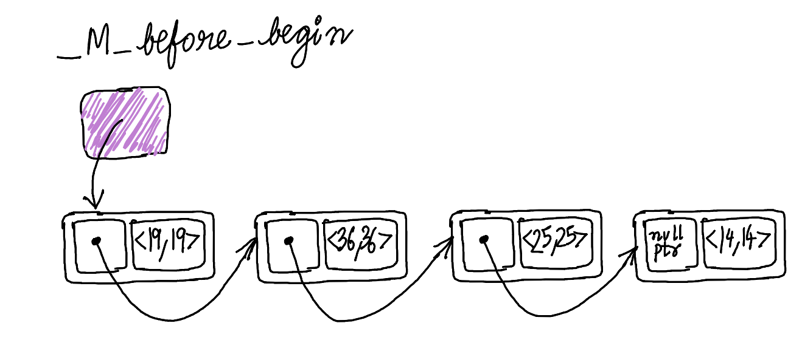

Introduction
We all love maps. A map is simply a data-structure that allows you to associate a key with some kind of value. They are fast and help to solve a large number of problems. Have you wondered what the internal implementation of a map looks like? In this post, I am going to explore the implementation details of unordered associative containers from the standard library(GCC’s libstdc++ implementation).
Currently there are four types of unordered associative containers:
std::unordered_mapstd::unordered_setstd::unordered_multimapstd::unordered_multiset
Usually, they are implemented on top of some kind of container. I am going to jump into the implementation of this HashTable container directly, because that’s where all the interesting stuff is hidden.
I’ll focus on the key-value containers with a unique set of keys(std::unordered_map and std::unordered_set) which have mostly similar logic.
GCC’s implementation can be found in the hashtable.h header. There are a lot of names with leading underscores. Not everyone is used to such code, but the standard library implementers have no choice, but to avoid collisions with user-defined names.
Data Layout
Nodes
One of the basic building blocks of the _Hashtable is a node. Each node is allocated from the heap and stores container data along with metadata information to maintain the hash table data-structure.
The node itself is a compound entity and contains several parts, some of them, optional. The design of the node structs brings to mind Russian dolls, because they are nested to each other.

The more complex node type(with more data) is inherited from the simpler node type(with a little bit less data). Let us walk through the components bottom up(from simpler to complex).
First, _Hash_node_base is defined in the following way. It has only _M_nxt field, which is a pointer to the next node of the hash table.
struct _Hash_node_base
{
_Hash_node_base* _M_nxt;
_Hash_node_base() noexcept : _M_nxt() { }
_Hash_node_base(_Hash_node_base* __next) noexcept : _M_nxt(__next) { }
};The next one _Hash_node_value_base is a little bit more interesting(see the actual code here). _Hash_node_value_base is responsible for storing the actual element value in the _M_storage member variable. It also provides accessor methods to retrieve the stored value.
template<typename _Value>
struct _Hash_node_value_base
{
using value_type = _Value;
__gnu_cxx::__aligned_buffer<_Value> _M_storage;
// ...
};It is a templated class with _Value template parameter that represents the value_type. _Value type is wrapped into __gnu_cxx::__aligned_buffer (thin wrapper around std::aligned_storage) to decouple memory allocation from actual object creation.
The next struct is _Hash_node_code_cache and it implements hash value caching logic. When searching for a key in an unordered map, (i) we need to compute the hash-code of the search key, \(h(k)\), (ii) find the right bucket idx = h(k) % table_size and then (iii) walk the collision chain comparing each node’s key with you key \(k\). When keys are large or complex like std::string, using the equality predicate and doing full key comparisons for every node in the chain is expensive. So, we can choose the cach the hash code with each node:
template<typename _Value, bool __cache>
struct _Hash_node_code_cache {
size_t _M_hash_code; // Stored hash value
};
// Specialization when caching is disabled
template<typename _Value>
struct _Hash_node_code_cache<_Value, false> {
// Empty - no overhead
};This way Empty Base Class Optimization(EBCO) can be leveraged, since _Hash_node_code_cache will be extended by inheritance. And that’s exactly what _Hash_node_value is doing:
template<typename _Value, bool _Cache_hash_code>
struct _Hash_node_value
: _Hash_node_value_base<_Value>
, _Hash_node_code_cache<_Cache_hash_code>
{ };The size of the _Hash_node_value will be the same as size of _Hash_node_value_base<_Value> in case template argument _Cache_hash_code is false as _Hash_node_code_cache will be an empty struct.
The final piece of the puzzle is the _Hash_node that combines everything above together:
template<typename _Value, bool _Cache_hash_code>
struct _Hash_node
: _Hash_node_base
, _Hash_node_value<_Value, _Cache_hash_code>
{
_Hash_node*
_M_next() const noexcept
{ return static_cast<_Hash_node*>(this->_M_nxt); }
};Below is a picture of the _Hash_node struct data layout to better visualize what’s going on.
┌──────────────────────────────────────────────────────────────┐
│ _Hash_node<Value> │
├──────────────────────────────────────────────────────────────┤
│ inherits from _Hash_node_base │
|--------------------------------------------------------------|
│ _Hash_node_base* _M_nxt; // ptr to next node │
├──────────────────────────────────────────────────────────────┤
| inherits from _Hash_node_value |
|--------------------------------------------------------------|
| inherits from _Hash_node_value_base |
|--------------------------------------------------------------|
│ aligned_buffer<Value> _M_storage; // The value │
├--------------------------------------------------------------┤
| inherits from_Hash_node_code_cache |
|--------------------------------------------------------------|
│ size_t _M_hash_code; // Cached hash│
└──────────────────────────────────────────────────────────────┘Summarizing, _Hash_node (directly or inherited from base structs) contains the following data.
_Hash_node_base* _M_nxtis a pointer to the next element in the linked list of hash table elements.__gnu_cxx::__aligned_buffer<_Value> _M_storage— node data itself. For example forstd::unordered_map<std::string, int>container_Valuetemplate argument isstd::pair<const std::string, int>.std::size_t _M_hash_codeoptional cached value of key’s hash.
Hash table
The _Hashtable class is defined in the following way:
class _Hashtable{
private:
_Hash_node_base** _M_buckets = &_M_single_bucket;
std::size_t _M_bucket_count = 1;
_Hash_node_base _M_before_begin;
std::size_t _M_element_count = 0;
_RehashPolicy _M_rehash_policy;
// ...
_Hash_node_base* _M_single_bucket = nullptr;
};The Hashtable class itself is a combination of std::forward_list<_Hash_node> - a linked list containing the elements belonging to a bucket and std::vector<std::forward_list<_Hash_node>::iterator> - a vector(array) of pointers representing the buckets.
_Hash_node_base** _M_buckets is an array of pointers to hash table nodes. One can think of it as _Hash_node_base* _M_buckets[] instead of a pointer to a pointer.
_Hash_node_base _M_before_begin is a special node without any user data. This node stores a pointer to the first hash table element (if there is any) in _M_before_begin._M_nxt.
One interesting thing is that _M_buckets contains _Hash_node_base* instead of _Hash_node*. The reason is because _M_buckets is kind of a storage for two types of objects: actual hash table nodes and a special before begin node _M_before_begin. This should be a lot more clear from the example:
Suppose we have the following code and we create std::unordered_map and insert \(4\) keys in this order \(14, 25, 36, 19\).
Then, the internal _Hashtable linked list will like the one in the picture below. The key order in the hash table is a reverse insertion order, so the key’s iteration order will be \(19\), \(36\), \(25\), \(14\).

Let’s make a real hash table from the linked list by adding buckets.
There are \(11\) buckets in the picture, only two buckets are not empty - buckets at index \(3\) and \(8\).
Thin arrows are pointers from the _Hashtable internal linked list from the previous picture, this time slightly rearranged and grouped by buckets. Each bucket stores a pointer to the node before the first node from the bucket. Bucket